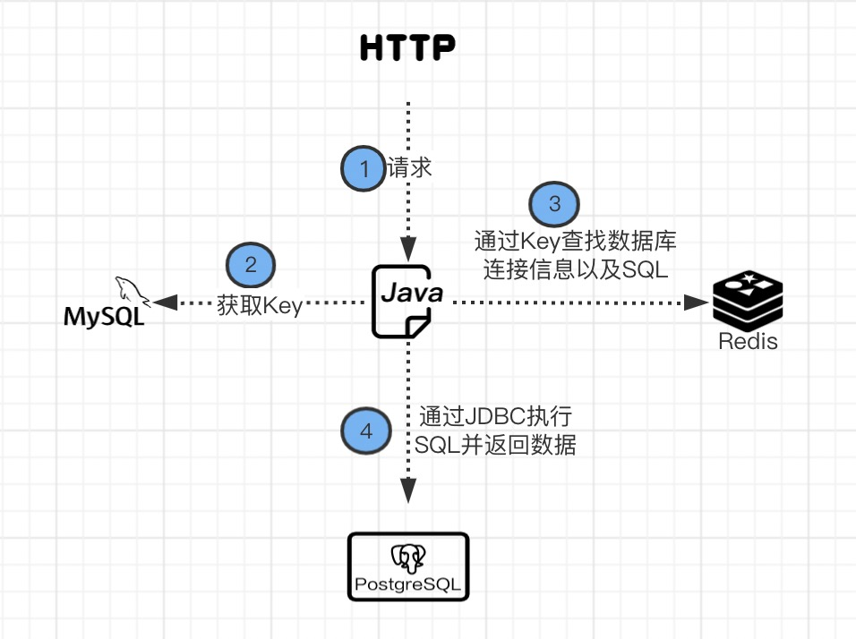

环境描述
某客户的生产环境，Redis 4.0.2 单机
问题现象
客户生产环境服务器因过年停机，年后开机后，Redis 重启，Java 服务连接 Redis 提示某个 Key 在 Redis 里不存在。
问题分析
Java 服务从 Redis 读 Key 读失败，说明服务本身是知道读哪个 Key 的，于是梳理了下问题的相关流程：

- Java 服务实际提供了一个 SQL 类型的 API，可以将数据库里的数据通过 API 透出给其他应用程序
- 当 HTTP 请求达到 Java 服务后，它会通过自身的业务库查询到当前 API 对应在 Redis 里的 Key
- 通过 Key 去 Redis 里查到对应的数据库连接信息以及要执行的查询 SQL
- 通过 JDBC 连接数据库，然后执行查询 SQL 查询数据，最后将数据返回给前台
既然读 Key 失败，说明在 Java 服务自身的业务库里是保存了这个 Key 的，于是去 MySQL 中查询，果然存在这个 Key，而 Redis 里确实也不存在这个 Key，说明 Redis 重启后，这个 Key 确实丢了。
继续分析，Java 程序在特定条件下会在 Redis 里写入这个 Key，而且 Redis 配置文件里配置了 SnapShot 的 save 机制：
1 | save 900 1 |
这个 Key 是个很早就写入 Redis 的，按照第一条 save 规则，应该是已经从内存写入到 rdb 文件中了，那为什么 Redis 启动的时候没有读到这条数据呢？
继续查看 Redis 配置文件，发现端倪：
1 | # The working directory. |
Redis 配置文件里，工作目录配置的是 ./ 这种相对路径，也就是说，启动 Redis 时，在哪个目录下运行启动命令，它就会在那个目录下找 rdb 文件并加载，如果目录下没有 rdb 文件，那 Redis 启动后就没有任何数据。
于是排查了 Redis 目录，在 Redis 根目录下发现了一个 rdb 文件，在 src 目录下也有个 rdb 文件，而这次 Redis 启动是在根目录下启动的，上次是在 src 目录启动的，导致这次启动后无法加载上次的 rdb 文件，也就导致了 Key 丢失。
解决方案
由于 Redis 被很多 Java 服务使用，不能随意重启，只好手动在 Redis 里将这个 Key-Value 写进去供程序使用；如果可以重启，只需更换启动目录，再重启下 Redis 就可以了。
不过最好的方式，还是将配置文件中的工作目录 dir 设置成绝对路径，这样无论在哪里启动 Redis，都能读到同一份 rdb 文件。
总结
很多知识是书本上学不到的，只有从一次次生产事故中总结学习…